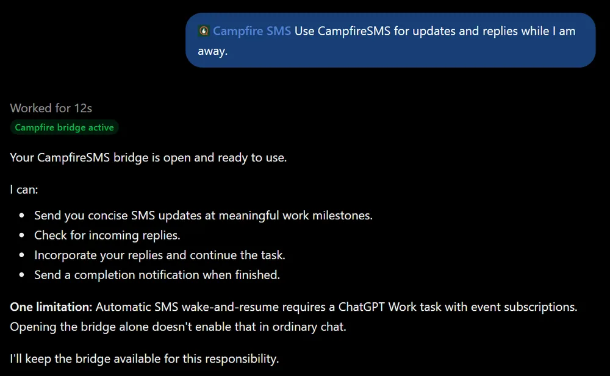
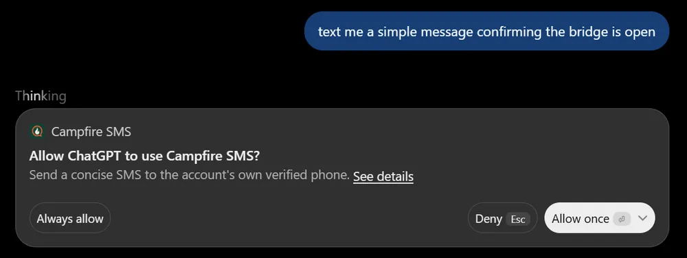

Campfire SMS
Campfire SMS
Campfire SMS is a ChatGPT plugin. It works in ordinary chats and in Work chats. Both can text you and read your replies. Only Work can subscribe to your replies, so that a text you send resumes the task while you’re away. Steps 1 to 5 work everywhere. Step 6 is for Work. For an overview first, see ChatGPT SMS.
Watch the setup
The video loads from YouTube when you press play.
Before you start
- A US or Canadian mobile number that can send and receive texts.
- A ChatGPT account where you can open Plugins (or Apps). Availability depends on your plan, workspace, and region, and a workspace admin may need to allow Campfire SMS.
- For reply wake: a Work chat on chatgpt.com, or in the ChatGPT desktop app with Cloud selected.
- Nothing to install on your computer. The ChatGPT plugin needs no install command, Node.js, or Python.
1. Create your Campfire SMS account
- Open Start free setup.
- Enter your mobile number, check the consent box, and choose Send verification code.
- Type the code from the text and choose Verify.
- Choose a six-digit PIN, confirm it, and choose Save PIN and continue. You’ll use your phone number and this PIN to connect ChatGPT.
The next screen shows an install command for agents on a computer. ChatGPT doesn’t need it, so you can close that page. Your account starts with 20 free messages.
2. Install Campfire SMS in ChatGPT
- Open the Campfire SMS plugin page in ChatGPT. Sign in to ChatGPT if it asks.
- If that link doesn’t open for you, open Plugins in ChatGPT (some accounts show Apps instead) and search for Campfire SMS.
- Choose Install plugin if it’s shown, then Connect.
OpenAI’s Plugins in ChatGPT help article shows where these menus are on each surface.
3. Sign in and connect your phone
ChatGPT opens a Campfire SMS page called Connect Campfire SMS.
- Enter your phone number and PIN, then choose Sign in. If you just created your account in this browser, you’ll go straight to the next screen.
- Check that the phone ending shown is yours, then choose Connect.
- You’re sent back to ChatGPT.
Forgot your PIN? Use Recover your PIN on that page. Connecting adds an installation named “ChatGPT / Codex” to your Campfire SMS account. An account can have five active installations. If you’re at five, the connection fails with installation_limit: sign in, open Manage installation on one you don’t use, choose Revoke access, and connect again. Disconnecting and reconnecting ChatGPT can add a new installation, so revoke old ones you no longer need.
4. Open the bridge and send a test text
Start a new chat. Type @ and choose Campfire SMS (or open +, then More), then send:
Use Campfire SMS for updates and replies while I am away.
ChatGPT opens a bridge to your phone and confirms it:

Then ask:
Text me a short message confirming the bridge is open.
ChatGPT asks before it sends:

Choose Always allow if you’ll use Campfire SMS while you’re away, so a later text doesn’t wait on a click. Choose Allow once to approve each text yourself. ChatGPT decides how long that choice lasts.
The text arrives from (608) 422-4987 and starts with “Campfire SMS:”. Save that number as a contact. On iPhones with Communication Limits turned on, that keeps your replies from failing.
5. Reply by text
- Reply to the text from your phone, for example: “Got it. Keep updates to one line.”
- In the chat, ask: “Check my texts.”
- ChatGPT retrieves your reply, uses it, and marks it handled so it won’t come back.
That’s how replies work in an ordinary chat: ChatGPT reads them when it checks, usually when you come back and send a message. It doesn’t jump back into the chat by itself when your text arrives. For that, use Work.
Keep each reply to one text: 160 characters, or 70 if it includes an emoji. Longer replies don’t reach ChatGPT.
6. Let a text reply resume a Work task
A Work chat can subscribe to your SMS replies. When you text back, ChatGPT gets an event, retrieves your reply, and continues the task. OpenAI documents these MCP events for Work chats on ChatGPT web and in the desktop app with Cloud selected.
- Open a Work chat on chatgpt.com, or in the desktop app with Cloud selected.
- Describe the task, and add:
Use Campfire SMS. Text me when you need a decision or when you’re done. When I reply by SMS, retrieve my reply and continue this task.
- Wait for ChatGPT to confirm that it opened the bridge and subscribed to your SMS replies. If it says it can’t subscribe, events aren’t available in that chat or on your account yet. The texting tools still work.
- Before you leave, have it send one test text and approve it with Always allow.
- When its next question arrives, reply from your phone. Check back later to see the task pick up your answer.
Good to know:
- One task at a time. Your phone has one open bridge, and one task can subscribe to it. Another chat that tries gets an “already subscribed” error.
- A subscription lasts up to seven days. For longer work, start a fresh task or ask the task to subscribe again.
- The event carries IDs only. ChatGPT fetches your reply text through its signed-in connection. It never sees your phone number.
- Replies wait until they’re handled. If an event is missed, your reply stays in the queue and the task gets it the next time it checks.
7. Finish, pause, or disconnect
- Done with a task: ask ChatGPT to close the Campfire SMS bridge. Closing it also stops reply events.
- From your phone: text
!bridge offto close the open bridge without opting out. - Stop all texts: text STOP. Text START to turn them back on.
- Disconnect ChatGPT: sign in to Campfire SMS, open Manage installation on the ChatGPT installation, and choose Revoke access. That closes its bridge and stops events.
If something isn’t working
- Campfire SMS isn’t in Plugins: use the direct plugin link, or look under Apps instead. In a business workspace, an admin may need to allow it in Admin → Plugins. Availability also varies by plan and region.
installation_limitwhen connecting: an account can have five active installations. Revoke one you don’t use, then connect again.- ChatGPT says a bridge is already active: another agent, such as Grok Bot or Claude Code, has your phone’s bridge open. Ask it to close the bridge, or text
!bridge off, then ask ChatGPT to open it again. - You got “No agent bridge is connected”: ChatGPT’s bridge is closed. Ask ChatGPT to open it, then reply to its next text.
- Your reply didn’t continue the task: in an ordinary chat, ask “Check my texts.” In Work, confirm the task subscribed, the subscription hasn’t expired, and no approval prompt is waiting in ChatGPT.
- Replies show “Not Delivered” on your iPhone: see the Not Delivered fixes.
- Texts stopped: you may be out of messages. Sign in to check your balance, or see pricing.
More fixes are in Troubleshooting and FAQ, or email support@campfiresms.com. Never send your PIN or a verification code.
Your SMS replies steer work ChatGPT is already doing. They don’t grant new permissions or answer ChatGPT’s own approval prompts. SMS isn’t end-to-end encrypted, so keep passwords and codes out of texts.
Want a text to start work while your PC is off, with no chat open? That’s Grok Bot with webhook wake.